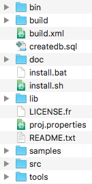

Comment installer la distribution source de cette application ?
Requis
Installation
- Téléchargez le dossier compressé.
- Décompressez le contenu dans un dossier, vous obtenez cette arborescence :
- Pour Créer la base de données, il faut importer le script createdb.sql contenu à la racine de l'application :
- Selon votre choix, vous pouvez l'importer dans :
- MySQLWorkbench : En choisissant le menu File -> Open SQL Script... et choisir createdb.sql
- phpMyAdmin : En choisissant l'onglet Import puis cliquer sur Choisir le fichier et choisir createdb.sql
- Une fois l'importation réussie , ouvrez un terminal de commandes.
- Tapez les commandes suivantes :

%cd chemin/vers/le/dossier/de/lapplication %ant
Désinstallation
Supprimez simplement le dossier d'installation